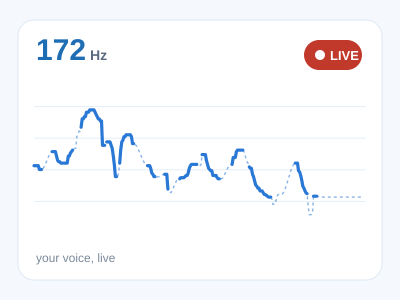
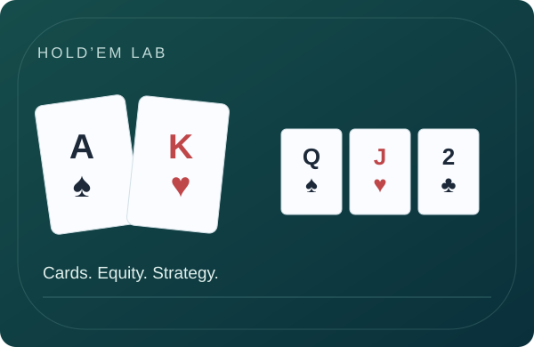
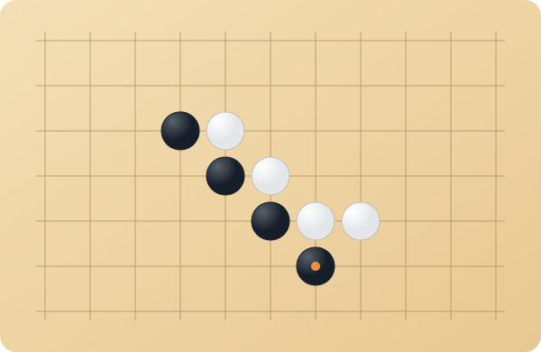
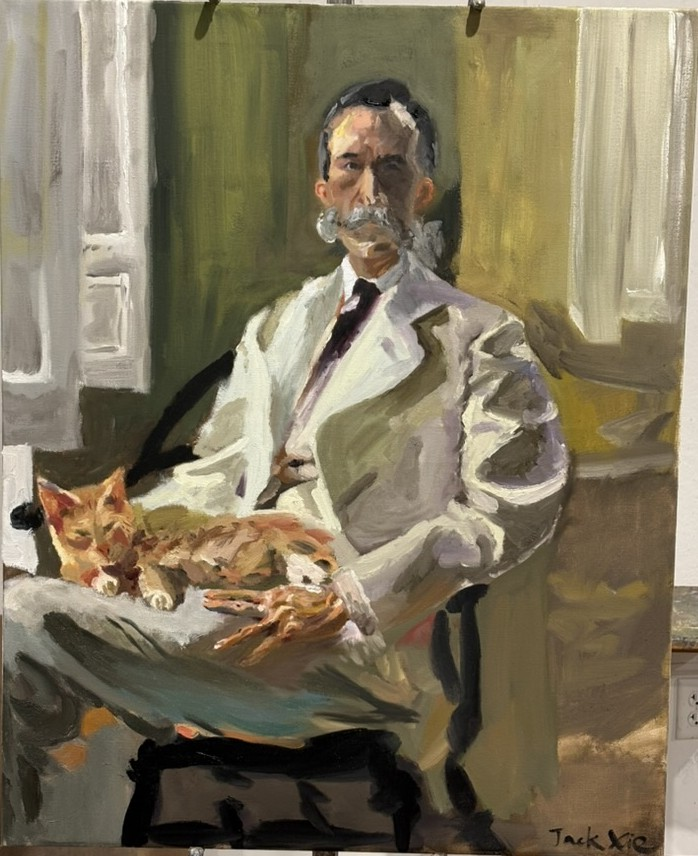

Fun Projects
Earlier and just-for-fun projects, separate from my research.

Live Pitch Tracker
Speak or sing and watch your voice's pitch contour drawn live in the browser. No audio is recorded or stored.
🎙 Try it →
Hold’em Lab · GTO & Equity
Select your cards, calculate equity on every street, and explore sourced preflop strategies.
Explore the calculator →
五子棋 · Gomoku
A little strategy break. Play five in a row against the computer or a friend.
▶ Play now
Man with the Cat (master copy)
An oil-on-canvas master copy of Cecilia Beaux's 1898 portrait Man with the Cat (Henry Sturgis Drinker).
View painting →
World Cup Hangman
A football-themed hangman game built in plain JavaScript, in honor of Emi Martínez.
▶ Play nowASL Fingerspelling Classifier
Comparing computer vision approaches for ASL fingerspelling, from CNNs to hand-skeleton models.
Read more →Skeletal Hand Classification
A real-time hand-pose classifier trained on hand-landmark data captured from a webcam.
Read more →